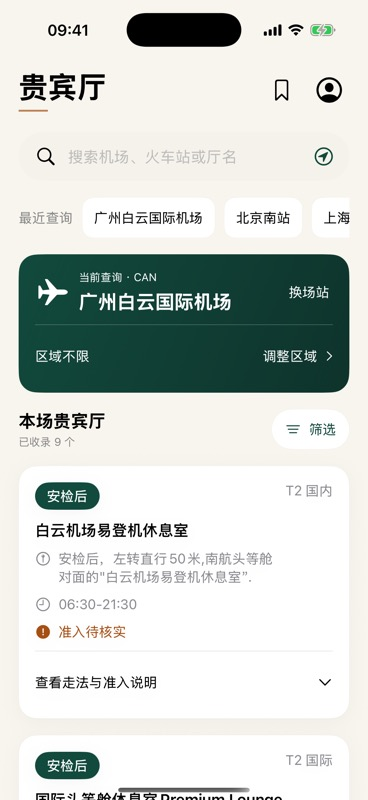

出行前，先找到休息的地方。
在一个页面搜索机场、火车站和贵宾厅，查看位置、公布时段与准入参考。无需注册，离线也能查阅已收录目录。
适用于 iOS / iPadOS 17 或更高版本。App 界面目前为中文。目录仅供参考，实际情况请以服务方为准。

App 界面示意，内容以实际版本为准。
让每一次查找更清楚
为出行前的查询而设计
搜索场站与贵宾厅
使用城市、机场三字码、厅名、位置关键词或拼音查找，在同一页面切换场站。
查看位置与时段
查看已收录的区域、安检位置、走法和公布时段，并按区域、通道等条件筛选。
收藏与本机参考
收藏常用厅，选择卡片、会籍与行程条件查看相关参考；资料保存在本机，不收集卡号或会员号。
通道或银行关联不代表一定有资格入场或免费使用。请在出行前向发卡行、服务商或场所核实适用条件、次数和预约要求。
开始查找
选择场站
搜索机场或车站，或主动使用定位按所在城市查找已收录场站。拒绝定位也可手动搜索。
查看详情
展开贵宾厅，查看位置、时段和已收录的来源；需要时使用筛选或收藏。
出发前核对
场所状态和政策可能变化，请联系场所或权益服务方确认最新信息。
隐私说明
更新日期：2026 年 10 月 28 日
本说明适用于贵宾厅 LoungeGuide App 和本网站。App 无需注册；当前版本未接入广告、跨 App 跟踪或第三方统计服务，也不要求提供银行卡号、身份证号、会员号或联系方式。
本机资料与保存期限
您选择的卡片产品、会籍、通道、行程条件、收藏、当前场站、最近查询及更新设置保存在设备本地，用于筛选和参考匹配。资料会保留到您修改、清除或删除 App；损坏的资料可能保留本机恢复副本。下载目录保留到更新替换、恢复内置目录或清除本机数据。
您可在 App 的「数据更新与设置」清除最近查询，或清除全部本机资料、恢复副本和下载目录。iOS 设备备份可能包含应用数据，由系统与您的备份设置控制。
位置与城市查询
只有您主动查询并授予定位权限后，App 才请求一次公里级精度的位置，用于识别所在城市；不会持续追踪，也不会将坐标保存到本机资料或发送给目录更新服务。坐标会交给 Apple 地理编码服务转换为城市名称，该过程可能通过网络访问 Apple 服务。关闭查询页面会停止查询。您可在 iOS 设置中撤回授权，也可手动搜索。
目录更新与网络信息
App 从 GitCode 公开仓库通过 HTTPS 检查和下载目录，不会在请求中附带本机资料、收藏、搜索内容或位置。自动更新可在设置中关闭；关闭后仍可使用本机目录并手动检查。GitCode 及其网络服务商可能接收 IP 地址、请求时间、请求地址和常规连接信息，并按其规则处理。App 无法替服务方删除日志。
来源、分享与反馈
打开来源链接会访问第三方网站，对方可获得常规网络连接信息，并适用其隐私规则。复制内容会写入系统剪贴板；分享或导出会将您确认的文字交给所选接收方。邮件反馈需由您在邮件应用中确认发送；邮件服务商和收件方会收到您的邮件地址和内容。GitCode Issue 公开可见，可能需要登录；请勿在反馈中填写敏感信息。
本网站与联系方式
本页面由 GitHub Pages 托管，不使用本站统计工具或广告。GitHub 及其网络服务商可能处理常规访问日志。隐私疑问或产品问题可通过下方支持入口联系；公开 Issue 不适合提交敏感个人信息。
支持与反馈
遇到问题或发现资料变化？
反馈问题或纠正信息
您可以发送邮件，或前往 GitCode 创建 Issue。请描述场站、问题与可核对来源，并确认发送或提交。
Issue 公开可见，可能需要 GitCode 登录。请勿填写卡号、身份证号、会员号或其他敏感信息。
常见问题
无法定位？ 检查 iOS 定位服务和 App 权限，或返回首页手动搜索。
更新失败？ 请检查网络并稍后重试；现有目录仍可离线使用。
能否直接入场？ 匹配结果仅为参考，实际资格和剩余次数请向服务方确认。